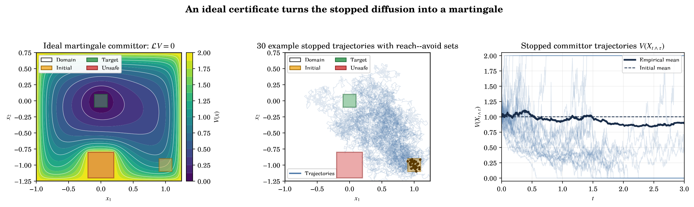
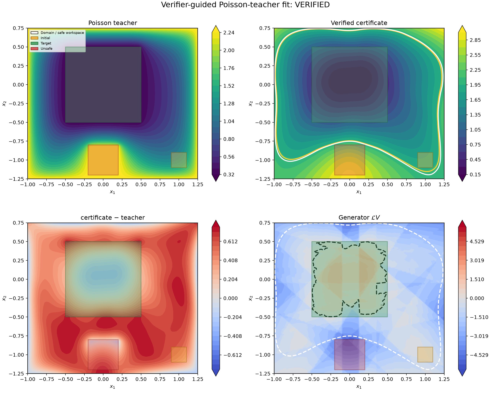

Itô–Tanaka Certificates
In this post, I describe how neural supermartingale certificates can remain valid even when they have kinks. The key is to replace the ordinary Itô formula with the Itô–Tanaka–Meyer formula, which explicitly accounts for the local time accumulated at interfaces.
Safety certificates for stochastic systems
Consider a stochastic differential equation $dX_t=f(X_t)dt+\sigma(X_t)dW_t$. Given initial, target, and unsafe sets, we want to bound the probability of reaching the unsafe set or leaving the certified domain before reaching the target.
A nonnegative function $V$ provides such a bound when it is small on the initial set, large on the failure boundary, and $V(X_{t\wedge\tau})$ is a supermartingale. In that case,

What changes when the certificate has kinks?
Previous neural certificate work assumes $V\in C^2$. ReLU-based functions are only piecewise smooth: their gradients jump across activation facets. The multidimensional Itô–Tanaka formula adds a surface-local-time term for each shared facet $F$:
where $\gamma_F=(\nabla V_j-\nabla V_i)^\top n_{i\to j,F}$ is the jump in the normal derivative. Since local time is nondecreasing, the stopped process is a supermartingale when both the ordinary generator contribution and every interface contribution are nonpositive:
Why piecewise quadratic?
A plain ReLU network is affine inside each activation cell, so it has no classical curvature there. For diffusions, this can make the generator inequality impossible even in a simple one-dimensional example. A piecewise-quadratic network retains compact ReLU partitions while adding the Hessian term needed to counteract drift.
I also considered a residual architecture $V_\theta=\rho(S_\theta-C_\psi)$, where $S_\theta$ is $C^1$ and piecewise quadratic, and $C_\psi$ is a convex ReLU input-convex neural network. Convexity makes the gradient jumps of $C_\psi$ nonnegative; subtracting it gives every interface the safe sign automatically.
A verified experiment
On a two-dimensional Ornstein–Uhlenbeck benchmark, I first approximated a Poisson solution, fixed the resulting quadratic features, and fitted their coefficients with linear programming. The verifier checked all 1,177 discovered cells with no unresolved cells for $\alpha=1.97$, $\beta=2$, and $\epsilon=0.1$. This gives a valid but loose failure-probability bound of $0.985$.

Limitations and next steps
The verified result is still limited to a simplified two-dimensional setting. The ICNN branch was disabled in the final LP-fitted certificate, and Adam did not produce a certificate satisfying all conditions at once. Exact cell discovery is also the main scaling bottleneck.
The next verification direction is bound propagation with adaptive domain splitting. The architecture can continue to guarantee the local-time sign, while the verifier concentrates on value and generator inequalities.
Acknowledgments
This work was completed during the 2026 University of Birmingham Summer Research Programme in AI Safety, supervised by Grigory Neustroev in the lab of Prof. Mirco Giacobbe.